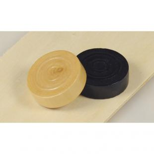

- Le damier doit être placé de manière à ce que la première case foncée soit en bas gauche pour les deux joueurs.
- Le jeu se joue sur les cases foncées du damier. Il y a donc uniquement la moitié des cases qui sont actives.
Victoire ou défaite ?
La victoire est obtenu par un joueur lorsque son adversaire :
- Abandonne la partie
- Se trouve dans l'impossibilité de jouer alors que c'est à son tour de jouer
- N'a plus de pièces (Dames ou Pions)
- D'un accord commun pour une match nul (égalité)
- Lorsqu’aucun des deux joueurs ne peut gagner la partie
Comment les pions se déplacent-ils ainsi que leur fonctionnement ?
Il y a deux types de pièces : Les pions et les dames
-

Un pion se déplace obligatoirement vers l'avant et en diagonale.
Lorsque un pion atteint la dernière rangée, il devient une dame.
Une couronne apparaît sur le pion devenue une dame. -
Une dame se déplace en diagonale vers l’avant mais aussi vers l’arrière sans limite de cases